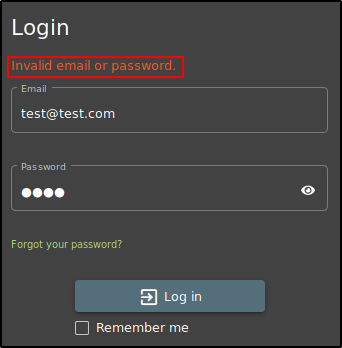

To test the authentication, we need to log out and go back to the login page.
Some web apps, when you try to login,
will tell you if ONLY the email or the password is wrong, implicity telling
that the other parameter is ok!!!
We can try something:
In this case, the error message doesn't tell us what is wrong

We can try for "Forgot your password":
If we insert some bad email, we can not use the "Secret Question" form:
But, if we insert an existing email (the admin one, obtained by looking into the profile from SQL Injection)
tell us that we can write into the field, in brief: that the email exist!!
Other things we can check is Account Fixation:
We can create an account real quick
Now, before login, we can try to get a request of the home page:
that is to check our SessionID if it changes or rotate when we login or logout
Intercept the request of the login page and send to the Repeater,
Now, turn off the interceptor in Burp Suite, log in, turn on and intercept the new request: